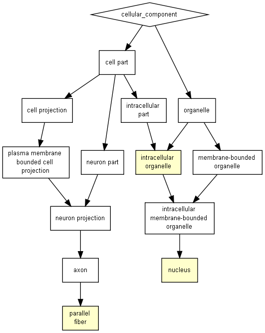

P-value color scale
| > 10-3 |
10-3 to 10-5 |
10-5 to 10-7 |
10-7 to 10-9 |
< 10-9 |

| GO term |
Description |
P-value |
FDR q-value |
Enrichment (N, B, n, b) |
Genes |
| GO:0005634 |
nucleus |
3.89E-4 |
7.48E-1 |
2.59 (18319,5193,15,11) |
[+] Show genes
MEX3C - mex-3 rna binding family member c
ZNF341 - zinc finger protein 341
FIGN - fidgetin
FOXB2 - forkhead box b2
PEG10 - paternally expressed 10
SIK2 - salt-inducible kinase 2
ONECUT3 - one cut homeobox 3
ZNF462 - zinc finger protein 462
HTT - huntingtin
SETD1A - set domain containing 1a
FBXO11 - f-box protein 11
|
| GO:0043229 |
intracellular organelle |
6.11E-4 |
5.87E-1 |
1.83 (18319,9320,15,14) |
[+] Show genes
ZNF341 - zinc finger protein 341
MEX3C - mex-3 rna binding family member c
PEG10 - paternally expressed 10
PCLO - piccolo presynaptic cytomatrix protein
FBXO11 - f-box protein 11
DAB2IP - dab2 interacting protein
FIGN - fidgetin
FOXB2 - forkhead box b2
SIK2 - salt-inducible kinase 2
ONECUT3 - one cut homeobox 3
ZNF462 - zinc finger protein 462
HTT - huntingtin
CCDC6 - coiled-coil domain containing 6
SETD1A - set domain containing 1a
|
| GO:1990032 |
parallel fiber |
8.19E-4 |
5.25E-1 |
1,221.27 (18319,1,15,1) |
[+] Show genes
DAB2IP - dab2 interacting protein
|
Species used: Homo sapiens
The system has recognized 19363 genes out of 20095 gene terms entered by the user.
19363 genes were recognized by gene symbol and 0 genes by other gene IDs .
186 duplicate genes were removed (keeping the highest ranking instance of each gene) leaving a total of 19177 genes.
Only 18319 of these genes are associated with a GO term.
The GOrilla database is periodically updated using the GO database and other sources.
The GOrilla database was last updated on Jun 23, 2018
This results page will be available on this site for one month from now (until
Jul 25, 2018
). You can bookmark this page and come back to it later.
'P-value' is the enrichment p-value computed according to the mHG or HG model. This p-value is not corrected for multiple testing of 1922 GO terms.
'FDR q-value' is the correction of the above p-value for multiple testing using the Benjamini and Hochberg (1995) method.
Namely, for the ith term (ranked according to p-value) the FDR q-value is (p-value * number of GO terms) / i.
Enrichment (N, B, n, b) is defined as follows:
N - is the total number of genes
B - is the total number of genes associated with a specific GO term
n - is the number of genes in the top of the user's input list or in the target set when appropriate
b - is the number of genes in the intersection
Enrichment = (b/n) / (B/N)
Genes: For each GO term you can see the list of associated genes that appear in the optimal top of the list.
Each gene name is specified by gene symbol followed by a short description of the gene
Back to the GOrilla main page